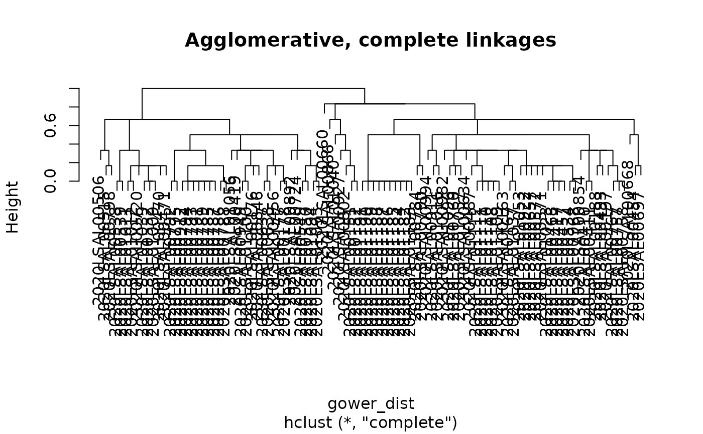

Compute Gower distances and the hierarchical clustering tree
Source:R/assess_gower.R
assess_gower.RdComputes the Gower dissimilarity between strains (suited to categorical metadata) and performs an agglomerative hierarchical clustering with complete linkage.
Usage
assess_gower(clean_data, weights = rep.int(1, p), graph = TRUE)Source
Adapted from the dissimilarity matrix and agglomerative clustering steps of Anastasia Reusova's tutorial: Reusova A. (2018). Hierarchical Clustering on Categorical Data in R. Towards Data Science. https://medium.com/@anastasia.reusova/hierarchical-clustering-on-categorical-data-in-r-a27e578f2995. Code: https://github.com/khunreus/cluster-categorical.
Arguments
- clean_data
A data frame of factors, one row per strain, as returned by
prepare_input().- weights
Numeric vector of weights, one per column of
clean_data, to give more or less importance to each metadata. Defaults to equal weights.- graph
If
TRUE(default), the dendrogram is plotted.
Value
A list with two components:
- gower_dist
the Gower dissimilarity matrix, an object of class
dissimilarity/dist(seecluster::daisy());- aggl.clust.c
the clustering tree, an object of class
hclust.
See also
Other clustering method:
cstats_table(),
export_selection(),
report_selection(),
select_silhouette(),
select_strains()
Examples
raw_data <- salmonella_strains
prepared_data <- prepare_input(raw_data, col_select = c("CONTEXTE", "MATRICE1", "REGION", "SECTEUR", "LIEUPVT"),
id = "IDENTIFIANT", date = "DATE_PRELEVEMENT")
#> no duplicate ID
#> selected metadata: CONTEXTE, MATRICE1, REGION, SECTEUR, LIEUPVT, ANNEE
gower <- assess_gower(prepared_data, graph = TRUE)
